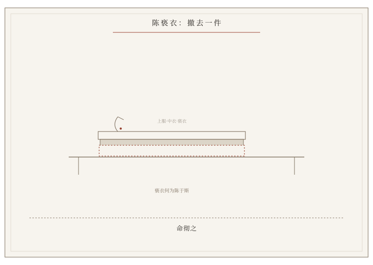

檀弓下 · 四·四十三 · 第 368 课
季康子之母死，陈亵衣。敬姜曰：「妇人不饰，不敢见舅姑。将有四方之宾来，亵衣何为陈于斯？」命彻之。
说什么事：季康子的母亲死了，家里把贴身的内衣陈列出来，以备入殓。敬姜说：「妇人若不妆饰，尚不敢见舅姑。如今四方之宾将至，亵衣为什么陈列在这里？」命令撤去。
落在哪一层：以「见」量礼。论一个人死后以什么面目被人看见。
为何编在此位：上节记敬姜之知子，此节记敬姜之知礼。一内一外，皆一人之事。
【经】季康子之母死，陳褻衣。敬姜曰：「婦人不飾，不敢見舅姑。將有四方之賓來，褻衣何為陳於斯？」命徹之。
【注】褻衣，非上服。陳之，將以斂。／言四方之賓來，嚴於舅姑。敬姜者，康子從祖母。
【疏】注「敬姜者，康子从祖母」：案《世本》：「悼子纪生平子意如，意如生桓子斯，斯生康子肥。」《世本》又云：「悼子纥生穆伯靖。」靖与意如是亲兄弟，意如是康子祖，穆伯是康子祖之兄弟；敬姜是穆伯之妻，故云「康子从祖母」也。
季康子 鲁国季孙肥，季氏之主。
陈 陈列。此谓陈列待殓之衣。
亵衣 注「非上服」，即贴身之衣。
敛 入殓，为尸加衣。
饰 妆饰、整饬。
舅姑 夫之父母。此泛言尊亲。
四方之宾 来自四方的宾客。
彻 撤去。
季康子的母亲死了，家中把贴身的内衣陈列出来，准备入殓。敬姜说：「妇人若不妆饰，连见舅姑都不敢。如今四方宾客就要到了，亵衣为什么陈列在这里？」便命人撤去。
此章只一件事：撤几件衣服。
而撤的理由，一句话讲完：见人的时候，不能是那个样子。
第一层 陈衣以待敛，本是常事 人死，为尸加衣，衣须先陈。
故「陈亵衣」不是逾礼，是循例。敬姜所争，不在「陈」，在「陈的是什么」。
礼之辨，常在「同一步骤里的选择」：做是该做的，用什么做才是礼。
第二层 亵衣：最近身的一件 注云「非上服」。亵衣贴体，最私。
私者不入公，此是礼的一条常则。而丧是至公之事：四方之宾皆来，堂上便是众目之地。
故私物置于众目之下，不是坦白，是失位。
第三层 「不敢见舅姑」：以生礼待死 此语最重。妇人事舅姑，必饰而后见；不饰则不敢见。
敬姜把这条生时之礼，一直推到死后：她死的时候，也要以「敢见」的样子被人看见。
礼对死者的最后一份敬，是让他仍然是那个体面的人。
第四层 「严于舅姑」：宾比尊亲更严 注云「言四方之宾来，严于舅姑」。
此语看似奇怪：舅姑是至亲，宾是外人，何以宾更严？
因为亲前可以稍有松弛，众前不可。礼于亲有「情」可通融，于众只有「形」可守。
第五层 今日之用：遗体的「体面」 今人治丧，有遗体整容、告别厅布置、遗照挑选，其义与「陈亵衣」正同。
所争的不是虚荣，是一个人最后被看见的样子。这件小事，是生者能替亡者做的最后一次「饰」。
若全然不顾，则丧礼只剩程序，亡者只剩一具「物」。
与今日何干 凡涉人之身后，凡涉人之体面，皆当问一句：这个样子，他自己敢见人吗？
| 左 | 右 |
|---|---|
| 陈衣 | 待敛之常 |
| 亵衣 | 非上服，最近身 |
| 敛 | 加衣于尸 |
| 饰 | 妆饰整饬 |
| 不敢见舅姑 | 生礼推及死后 |
| 四方之宾 | 众目之地 |
| 严于舅姑 | 亲可通，众不可 |
| 彻之 | 撤去 |
| 体面 | 最后一次饰 |
画一张大案的俯视局部，案上叠着三层衣物：最上一层为深色外衣，齐整；中一层为浅色中衣；最下一层露出一角贴身的细衣，边缘未整。案的一侧画一只手（只画手与袖口，不画人）正拈起最下一层的一角，向上提。案的另一侧留空。不画脸，不画文字。赭色只用在那只手的袖口。
